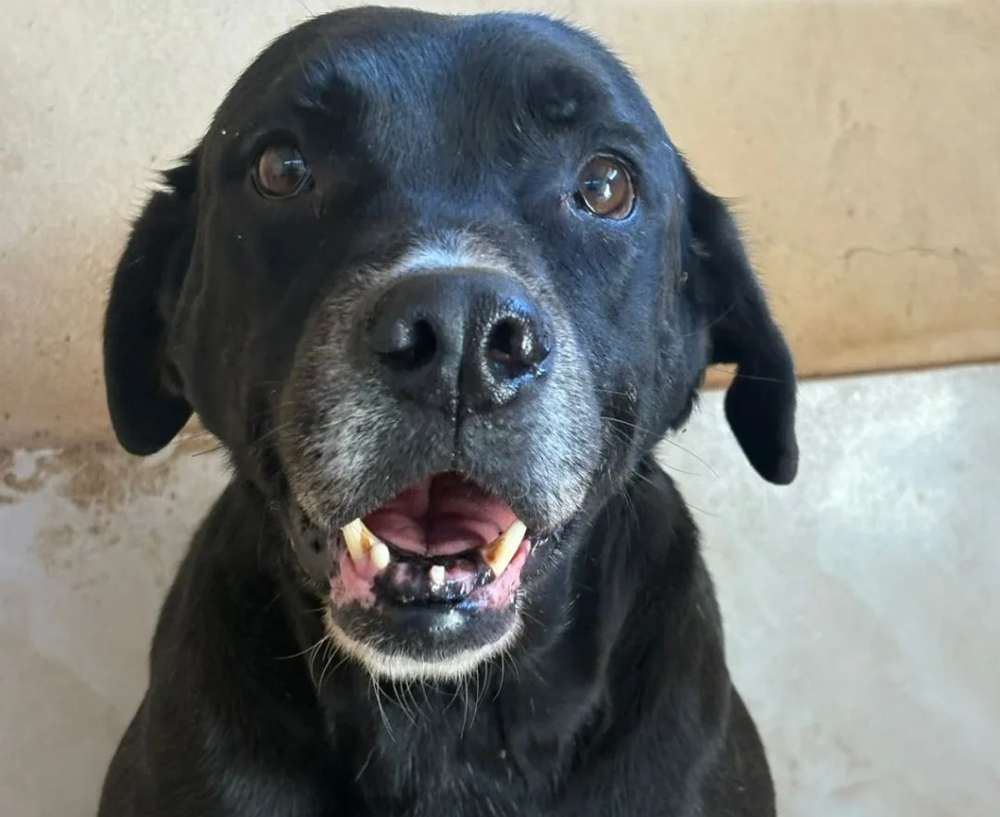
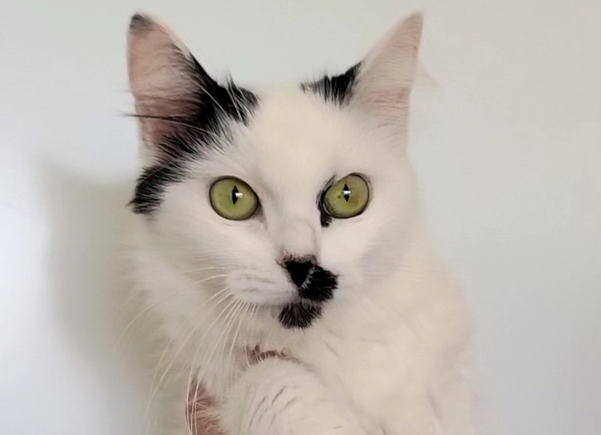
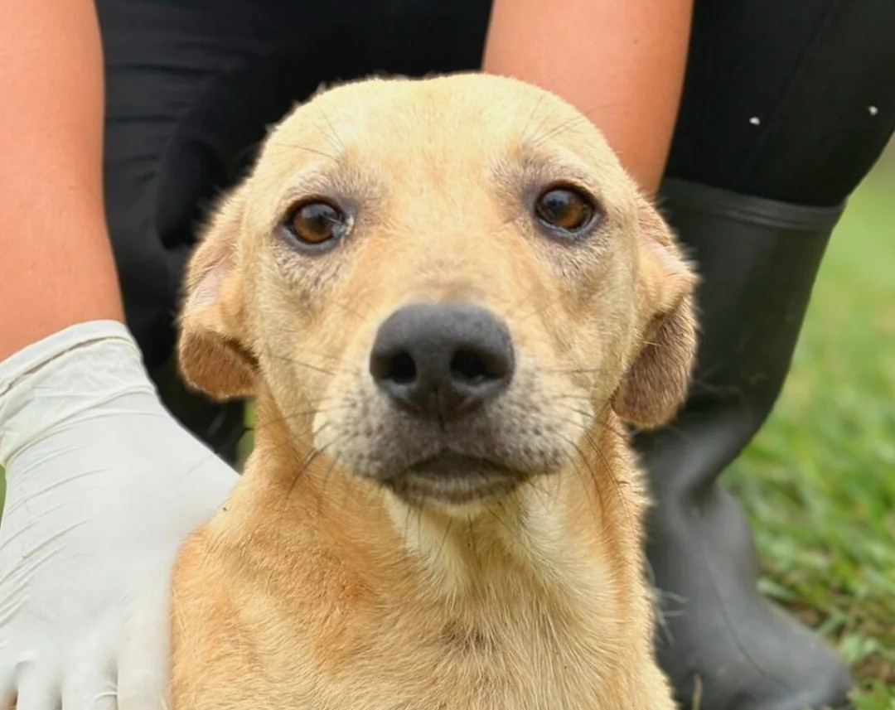
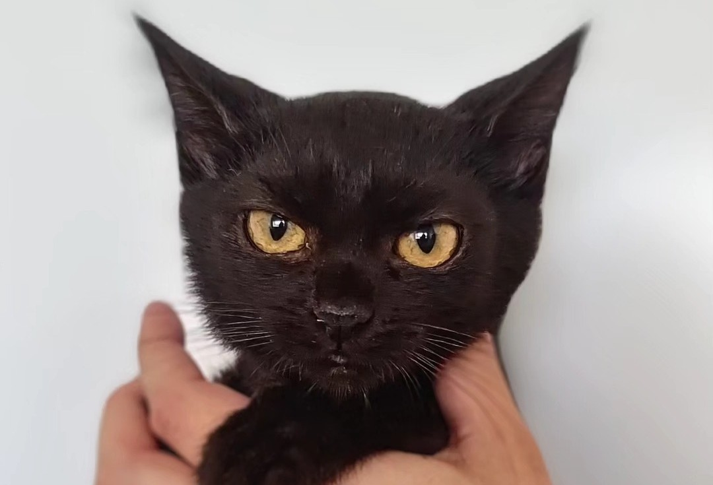
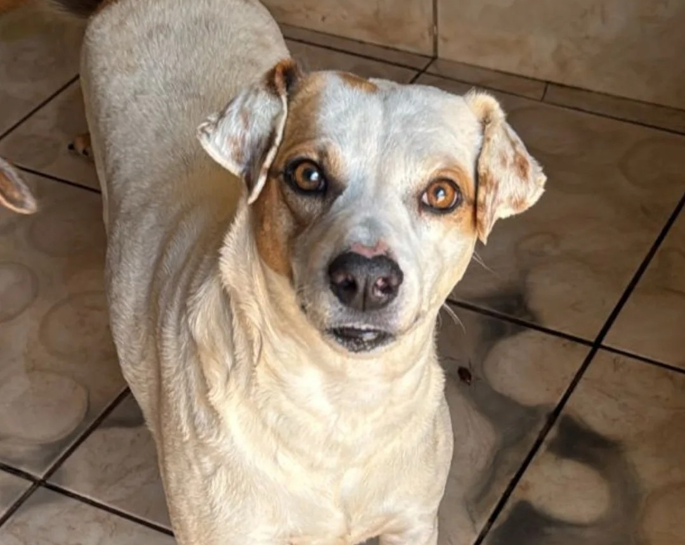
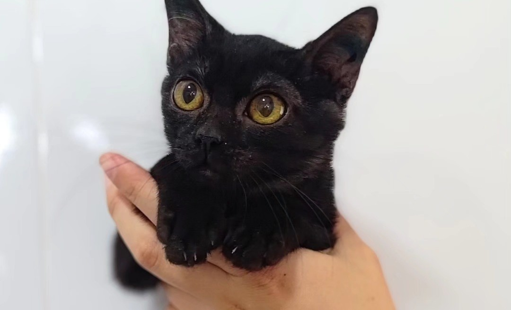

O Canil Siciliano, em Araraquara/SP, atua no acolhimento, cuidado e encaminhamento de animais resgatados para adoção responsável. A instituição realiza ações voltadas ao bem-estar animal, oferecendo suporte veterinário, conscientização e uma nova oportunidade para cães e gatos em situação de vulnerabilidade.

🐶 +- 10 anos
Amigável • Energético

🐱 +- 2 anos
Curiosa • Carinhosa

🐶 +- 1 ano
Sociável • Carinhoso

🐱 +- 4 meses
Reservada • Dócil

🐶 +- 6 anos
Alegre • Independente

🐱 +- 4 meses
Companheira • Tranquila